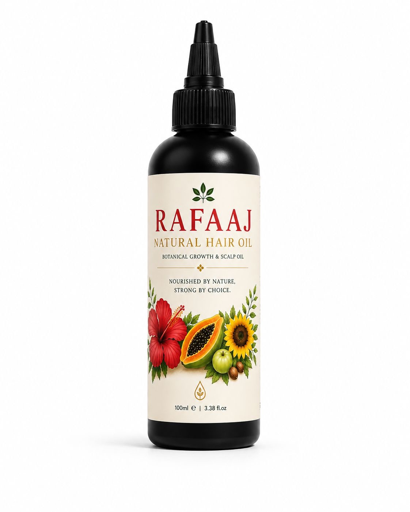
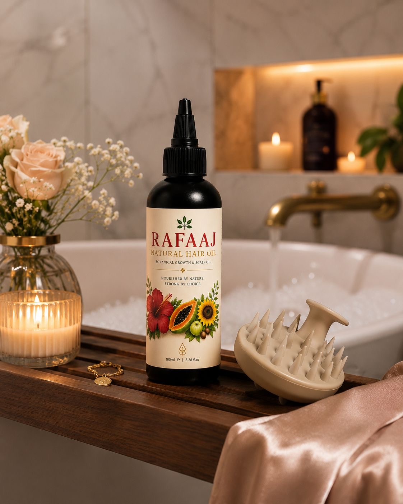
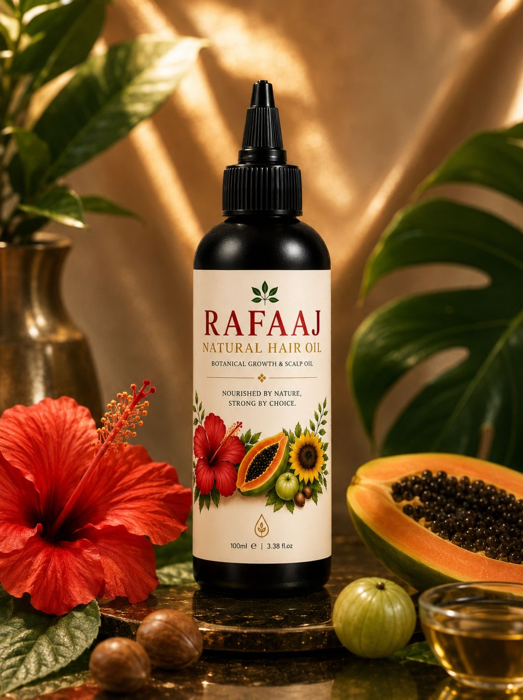
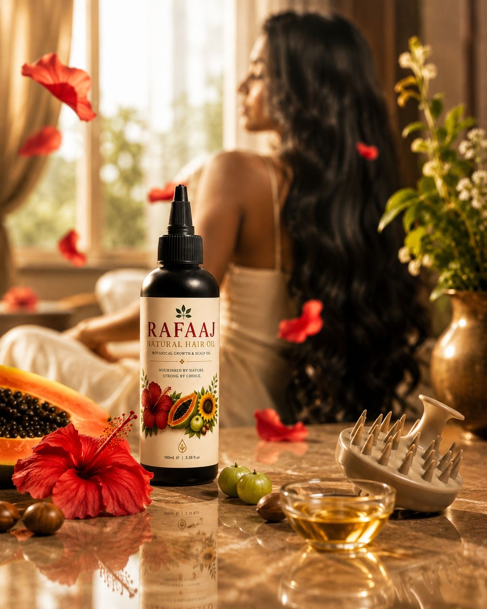
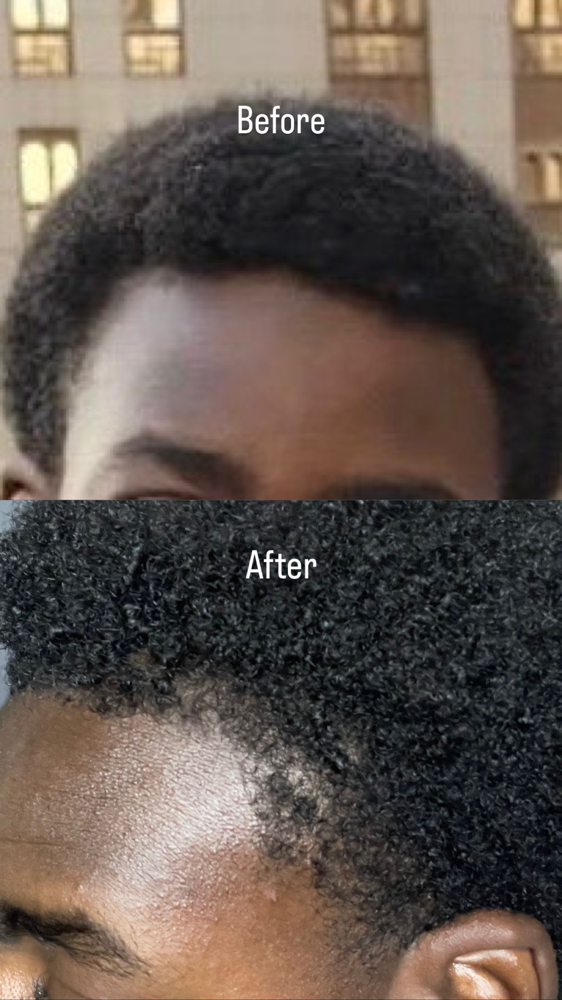
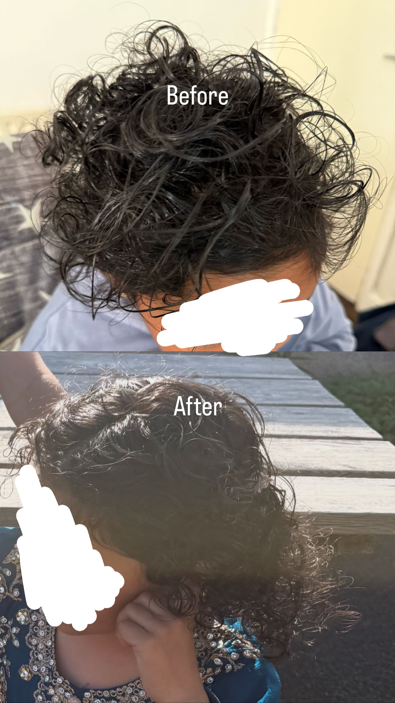
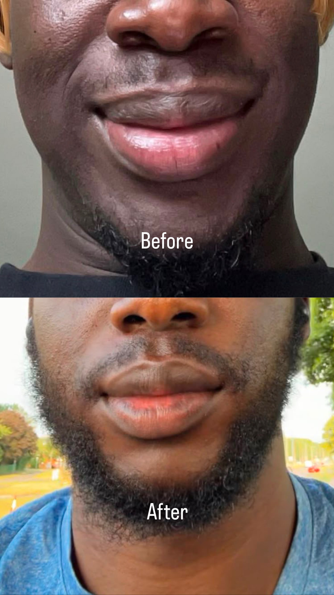
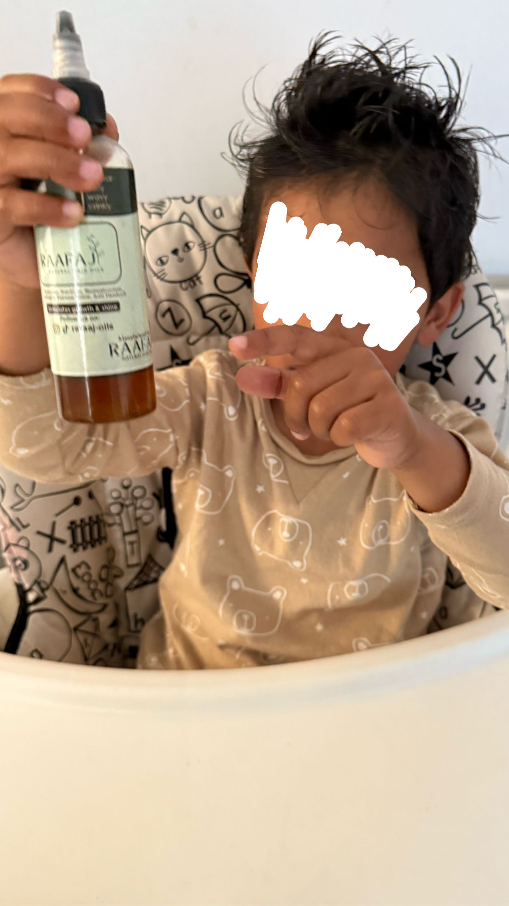
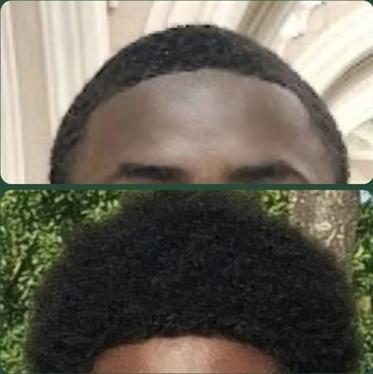

★★★★★ (reviews)
£24.99
A Unique blend of 20+ natural oils and botanical extracts that nourish the scalp, strengthen hair follicles, reduce hair oil, and promte healthy, shiny hair.
Promotes hair growth
Reduces hair fall & breakage
Deeply nourishes scalp
Adds natural shine
Safe & gentle for all hair types
Ships in 1-3 days · Delivery in 3-5 days
Simmondsia chinensis (jojoba) seed oil, Sesamum indicum (sesame) seed oil, Ricinus communis (castor) seed oil, Cannabis sativa (hemp) seed oil, Cucurbita pepo (pumpkin) seed oil, Moringa oleifera (moringa) seed oil, Adansonia digitata (baobab) seed oil, Eruca sativa (taramira) seed oil, Calophyllum inophyllum (tamanu) seed oil, Tocopherol, Helianthus annuus (sunflower) seed oil, Nigella sativa (black seed) seed oil, Lactobacillus/papaya fruit ferment extract, Rosmarinus officinalis (rosemary) leaf oil, Mentha piperita (peppermint) oil, Rosmarinus officinalis (rosemary) leaf extract, Carica papaya (papaya) seed oil, Melia azadirachta (neem) seed oil, Trigonella foenum-graecum (fenugreek) seed extract, Eugenia caryophyllus (clove) bud extract, Urtica dioica (nettle) leaf extract, Phyllanthus emblica (amla) fruit extract, Hibiscus sabdariffa (hibiscus) flower extract, Limonene, Linalool, Eugenol, Citral, Geraniol.
Please review our ingredients if you have sensitive skin or known allergies:
Always Patch Test First: Apply 2–3 drops to your inner elbow or behind your ear. Leave for 24 hours. If any redness, itching, or irritation occurs, wash the area and discontinue use.
This oil can be used as a daily oil or a deep pre-wash treatment. Just massage a few drops into your scalp and leave it on for as long as you want, even overnight, then wash it out with your regular shampoo. Use 2-3 times weekly for best results.
Shipping: Orders are processed within 1–3 business days. Once shipped, standard delivery takes about 3–5 business days. A tracking number will be emailed to you instantly.
Returns: We cannot accept standard returns or exchanges. However, If you experience an allergic reaction, please contact us within 14 days of delivery and we will gladly accept the return and cover all return shipping costs to make it right.
4.9
★★★★★
32 Reviews





“It keeps my hair feeling very soft and moisturized, and I've noticed less dryness. My hair looks healthier and has a nice shine. It's lightweight, easy to apply and doesn't feel too greasy. Overall, I am happy with the quality and would recommend it.”
“Great hair oil. It leaves my hair feeling soft, healthy and stronger. I've noticed less hair fall and healthier-looking hair with regular use. I definitely recommend it.”
“The hair oil is amazing. MashAllah, after using it on my head I felt relaxed and soothed. Not only does it grow hair, but it makes your scalp feel amazing. I would buy this product again and again. It also softens your hair and makes it thicker.”
“Five stars. It really suits my hair, makes it soft and silky, and reduces the frizz.”
“Very good for my hair. My beard has been growing nicely since I started using it.”
“Perfect oil for all hair types. This oil is very good. My hair has improved a lot.”
“Outstanding oil, MashAllah. I've used one bottle so far, and the way it makes the hair silky is magical. After so much damage from a keratin treatment, I lost hope of retrieving my curls. This oil definitely made a big difference, and I am happy with the results. I'm excited to try the new and improved product, InshAllah. Keep it going.”
"Rafaaj oil stands out for me cause its all natural and no artifical ingredients. A product i look forward to buying again. Nice and affordable. Thank you Rafaaj."
“Rafaaj Hair Oil has been amazing for my hair. It keeps my hair moisturized, soft and healthier-looking without feeling greasy. I've also noticed less breakage and improved hair growth. Highly recommend.”
“The oil is worth the buy. I see visible improvement in the texture of my hair, and it has looked hydrated lately. The growth is slow, perhaps because I'm still losing ends and not retaining the growth. Overall, it is a good oil and I would recommend it to anyone looking for a good hair oil.”
“MashaAllah, this hair oil is really good and helps with hair growth. I really enjoy the hair oil.”
“Rafaaj Hair Oil has shown me amazing results. Other than growing my hair really quickly, it stopped my hair from getting tangled. It is also very relaxing when you apply it. Results started to show in around two weeks, which is incredibly fast. I'm so grateful that I came across this oil, and what makes me even happier is that the results don't disappoint. The results are incredible.”
“I've been using Rafaaj Hair Oil and I am very happy with the results. It leaves my hair feeling soft, shiny and healthier without feeling greasy. A little goes a long way, and I would definitely recommend it.”
“I really love the hair oil. It helped my hair grow so much. I'm so grateful that I made this investment. The results didn't disappoint me like some other hair oils did. This hair oil is amazing. Anyone who is thinking of buying it should. I 100% recommend it, especially for Afro hair.”
“Absolutely love Rafaaj Hair Oil. It has left my hair feeling noticeably softer, healthier and much more manageable. I've also noticed a beautiful shine, and my hair looks and feels in great condition. Highly recommend.”
“I have been using this new hair oil for a few days now, and I can honestly say it is the best. It makes my hair feel softer, and the oil absorbs nicely into my scalp and strands. I have less frizz and dryness. I would recommend this hair oil to anyone looking to improve their hair. I rate it five stars and I'm going to order another bottle before it gets sold out!”
“My daughter and I have been using Rafaaj Hair Oil, and I love the smell and the nourishment it has provided for our hair. Thank you.”
“I would personally call Rafaaj Oil a miracle oil. Since I've been using it, my hair has been glowing and has become very thick and bushy. I introduced it to my family and friends, and they loved it because it is a clean oil without chemical effects. Rafaaj Oil contains pure organic oils. My son, who is a barber, also uses it for his beard and his clients' beards. Rafaaj Oil is five stars and more. Excellent oil.”
“It's a great oil that you can always count on when it comes to nourishing your hair.”
“I have been using this oil for some time, and it's really good. After washing, it makes my hair feel soft and healthy without being too greasy. I would recommend it.”
“I recently started using the hair oil, and its scent is lovely and not too strong. You only need a little, and you can massage it gently into your scalp. I will definitely continue to use it, as it contains many good oils for healthy hair.”
“This hair oil has been very nourishing for my hair and lasts a really long time. My hair has never felt so much healthier after using it.”
“I've been using this hair oil for a few weeks now, and I'm genuinely impressed. It makes my hair feel so much softer, smoother and healthier without feeling greasy or heavy. I've noticed a lot less frizz, and my hair looks shiny and healthy. A little goes a long way, so the bottle lasts ages. I would definitely recommend it to anyone looking to improve the condition of their hair.”
“I've been using this on my children, and it has really improved their hair. My son had very fine hair, and it was taking a long time to grow. After using Rafaaj Hair Oil for weeks, I noticed his hair was getting thicker and softer. My daughter has very curly hair and it needs lots of care. I was using various conditioners and curling creams to keep her hair looking smooth between washes. Since using the hair oil, I no longer use the curling creams. Her hair feels silky, soft and shiny, and it is more manageable. Her hair is now long and can be tied up. They get compliments whenever we go out, and I get asked what products I use. I will definitely be a repeat customer.”
“I have been using Rafaaj oils for over a year now, and I can't put into words how pleased I am with the results. I can't wait to see what's next.”
“I'm really impressed with the hair oil. It makes hair feel soft, smooth and shiny without being greasy. I noticed my hair getting fuller and experiencing less breakage. Definitely worth trying.”
"Rafaaj has really benefited my beard growth which I’ve always wanted , it was sold out, but I’m happy it’s back cause it makes my beard darker and also thicker."
“I have used many hair oils, but none have worked as well as Rafaaj Oil. I noticed effective growth in around two to three weeks. It also helps with breakage and works really well for Afro hair. It is definitely an oil I would recommend to anyone who would like to see quick results. It is 100% worth the purchase. This is a legitimate oil, and the results never disappoint. I am very pleased with the final results.”
"I’ve been using Rafaaj oil since last October, and now my hair has grown to around 4–5 inches. It feels thicker, healthier, and I’ve noticed much less breakage. Definitely one of the best hair oils I’ve used and I’d highly recommend it!"
“Good hair oil overall. It keeps my hair soft and reduces dryness. I've also found my hair easier to manage with regular use. Happy with the results so far.”
"I have been using this hair all for nearly a year now I use it once a week on a Sunday morning as part of self-care day before I wash it in the evening. I have noticed improvement in my hair conditions. It really well and hair is looking thicker. I definitely recommend this hair oil for me. It's a staple part of my Sunday routine."
“It makes hair full and dark.”
“I have been using Rafaaj Hair Oil and, overall, I am very satisfied. The oil helps keep my hair soft, smooth and well-nourished. I have noticed less dryness, and my hair feels healthier after regular use. It also has a pleasant scent and is easy to apply. While the results may take some time to become noticeable, it has been a good addition to my haircare routine.”